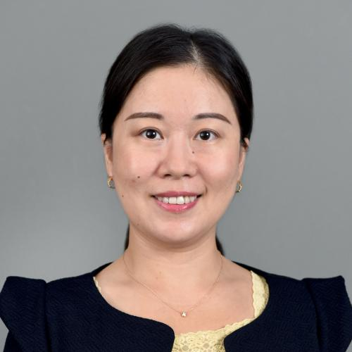
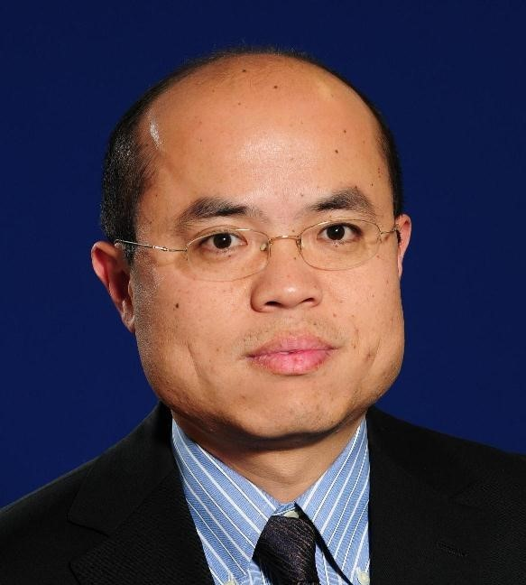

Welcome to DLG-AAAI’21!
Learn More
Max Welling Max Welling is is a research chair in Machine Learning at the University of Amsterdam and a VP Technologies at Qualcomm.
Abstract: In this talk I will introduce our next generation of graph neural networks. GNNs have the property that they are invariant to permutations of the nodes in the graph and to rotations of the graph as a whole. We claim this is unnecessarily restrictive and in this talk we will explore extensions of these GNNs to more flexible equivariant constructions. In particular, Natural Graph Networks for general graphs are globally equivariant under permutations of the nodes but can still be executed through local message passing protocols.
Jure Leskovec is a Slovenian computer scientist, entrepreneur and associate professor of Computer Science at Stanford University focusing on networks. He is the chief scientist at Pinterest.
Abstract: In this talk I will introduce our next generation of graph neural networks. GNNs have the property that they are invariant to permutations of the nodes in the graph and to rotations of the graph as a whole. We claim this is unnecessarily restrictive and in this talk we will explore extensions of these GNNs to more flexible equivariant constructions. In particular, Natural Graph Networks for general graphs are globally equivariant under permutations of the nodes but can still be executed through local message passing protocols.

Hanghang Tong is currently an associate professor at Department of Computer Science at University of Illinois at Urbana-Champaign.
Abstract: In this talk I will introduce our next generation of graph neural networks. GNNs have the property that they are invariant to permutations of the nodes in the graph and to rotations of the graph as a whole. We claim this is unnecessarily restrictive and in this talk we will explore extensions of these GNNs to more flexible equivariant constructions. In particular, Natural Graph Networks for general graphs are globally equivariant under permutations of the nodes but can still be executed through local message passing protocols.

Jingrui He is an associate professor in the School of Information Sciences at the University of Illinois at Urbana-Champaign.
Abstract: In this talk I will introduce our next generation of graph neural networks. GNNs have the property that they are invariant to permutations of the nodes in the graph and to rotations of the graph as a whole. We claim this is unnecessarily restrictive and in this talk we will explore extensions of these GNNs to more flexible equivariant constructions. In particular, Natural Graph Networks for general graphs are globally equivariant under permutations of the nodes but can still be executed through local message passing protocols.
Leman Akoglu is the Heinz College Dean's Associate Professor at Carnegie Mellon University's Heinz College of Information Systems and Public Policy.
Abstract: In this talk I will introduce our next generation of graph neural networks. GNNs have the property that they are invariant to permutations of the nodes in the graph and to rotations of the graph as a whole. We claim this is unnecessarily restrictive and in this talk we will explore extensions of these GNNs to more flexible equivariant constructions. In particular, Natural Graph Networks for general graphs are globally equivariant under permutations of the nodes but can still be executed through local message passing protocols.
Xavier Bresson is Associate Professor of Computer Science at the Nanyang Technological University (NTU) in Singapore.
Abstract: In this talk I will introduce our next generation of graph neural networks. GNNs have the property that they are invariant to permutations of the nodes in the graph and to rotations of the graph as a whole. We claim this is unnecessarily restrictive and in this talk we will explore extensions of these GNNs to more flexible equivariant constructions. In particular, Natural Graph Networks for general graphs are globally equivariant under permutations of the nodes but can still be executed through local message passing protocols.

Shuiwang Ji is currently an Associate Professor in the Department of Computer Science & Engineering, Texas A&M University, leading the Data Integration, Visualization, and Exploration (DIVE) Laboratory.
Abstract: In this talk I will introduce our next generation of graph neural networks. GNNs have the property that they are invariant to permutations of the nodes in the graph and to rotations of the graph as a whole. We claim this is unnecessarily restrictive and in this talk we will explore extensions of these GNNs to more flexible equivariant constructions. In particular, Natural Graph Networks for general graphs are globally equivariant under permutations of the nodes but can still be executed through local message passing protocols.
Jian Tang is currently an assistant professor at Mila-Quebec AI Institute and HEC Montreal.
Abstract: In this talk I will introduce our next generation of graph neural networks. GNNs have the property that they are invariant to permutations of the nodes in the graph and to rotations of the graph as a whole. We claim this is unnecessarily restrictive and in this talk we will explore extensions of these GNNs to more flexible equivariant constructions. In particular, Natural Graph Networks for general graphs are globally equivariant under permutations of the nodes but can still be executed through local message passing protocols.